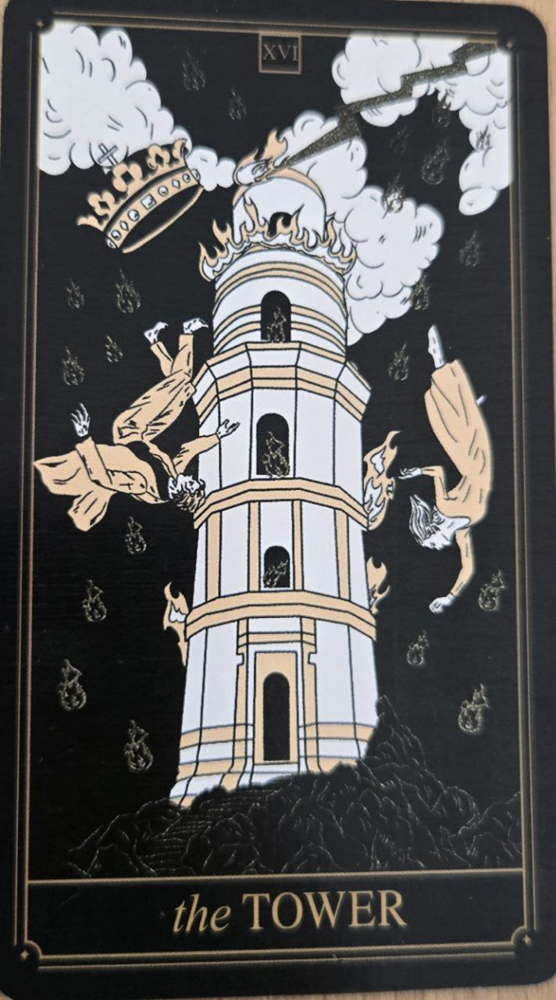

Veža patrí medzi najintenzívnejšie karty Veľkej arkány. Symbolizuje náhle zmeny, odhalenie pravdy a zrútenie toho, čo už nestojí na pevných základoch.
Hoci môže pôsobiť nepríjemne, jej cieľom nie je ničiť bez dôvodu, ale vytvoriť priestor pre niečo autentickejšie.
Karta predstavuje prelomové udalosti, nečakané zmeny a konfrontáciu s realitou.
Naznačuje, že staré predstavy alebo štruktúry už nemožno ďalej udržiavať.
Na karte býva vysoká veža zasiahnutá bleskom. Pád veže symbolizuje rozpad ilúzií a falošných istôt.
Blesk predstavuje náhle uvedomenie alebo pravdu, ktorú už nemožno ignorovať.
Veža býva často obávaná, no mnohí ľudia si až spätne uvedomia, že zmena, ktorú priniesla, bola potrebná.